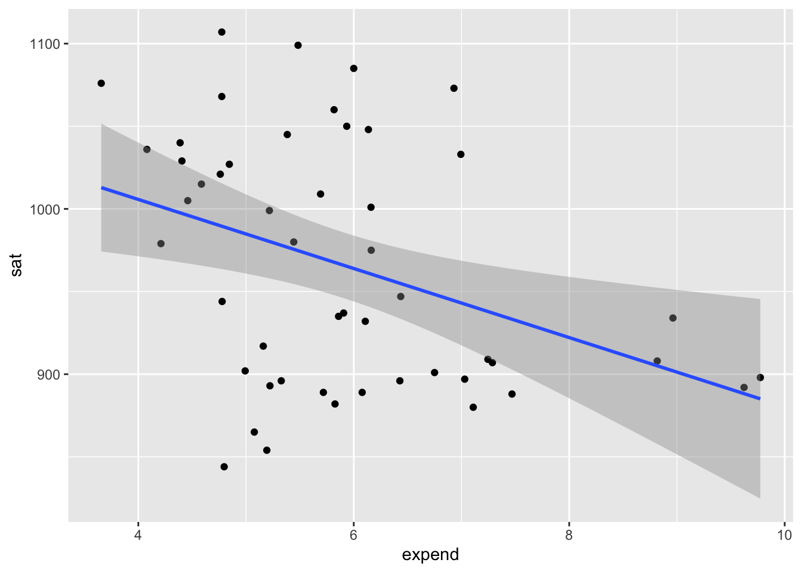
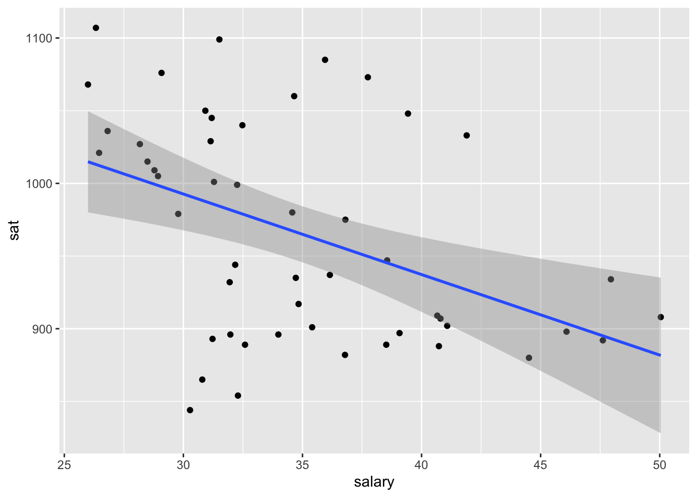
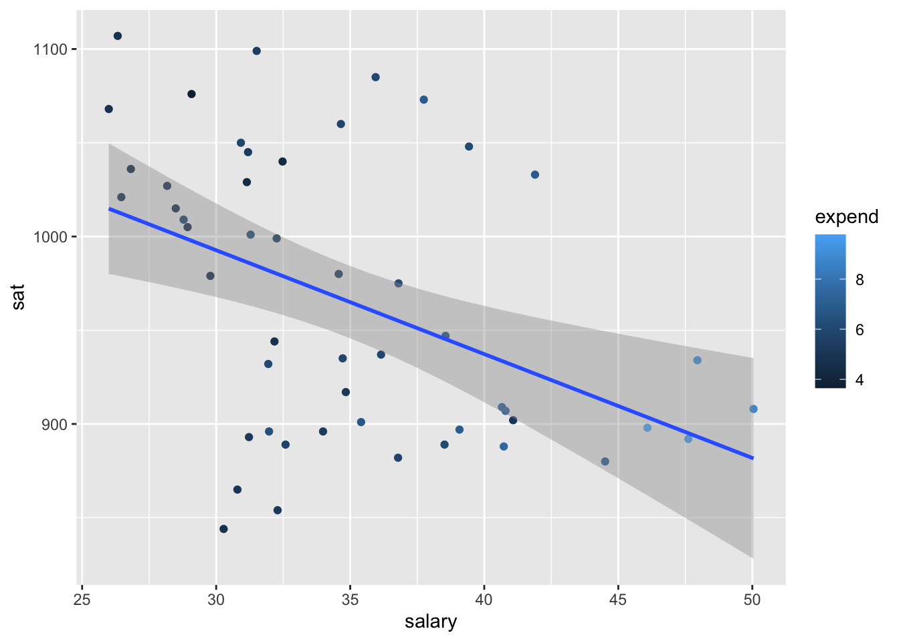
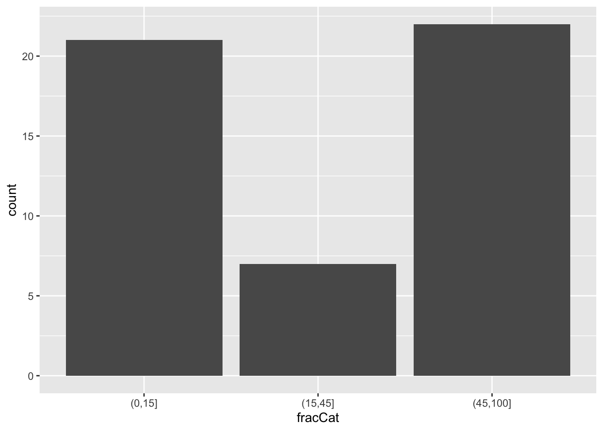
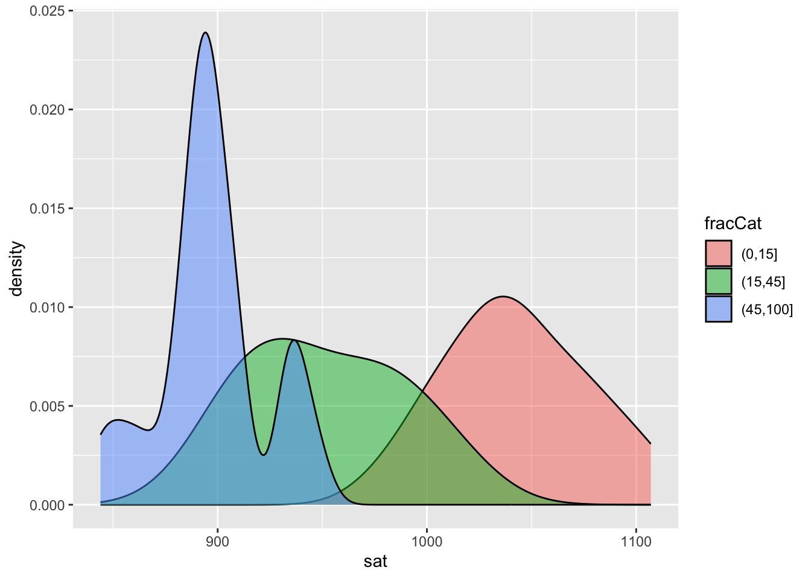
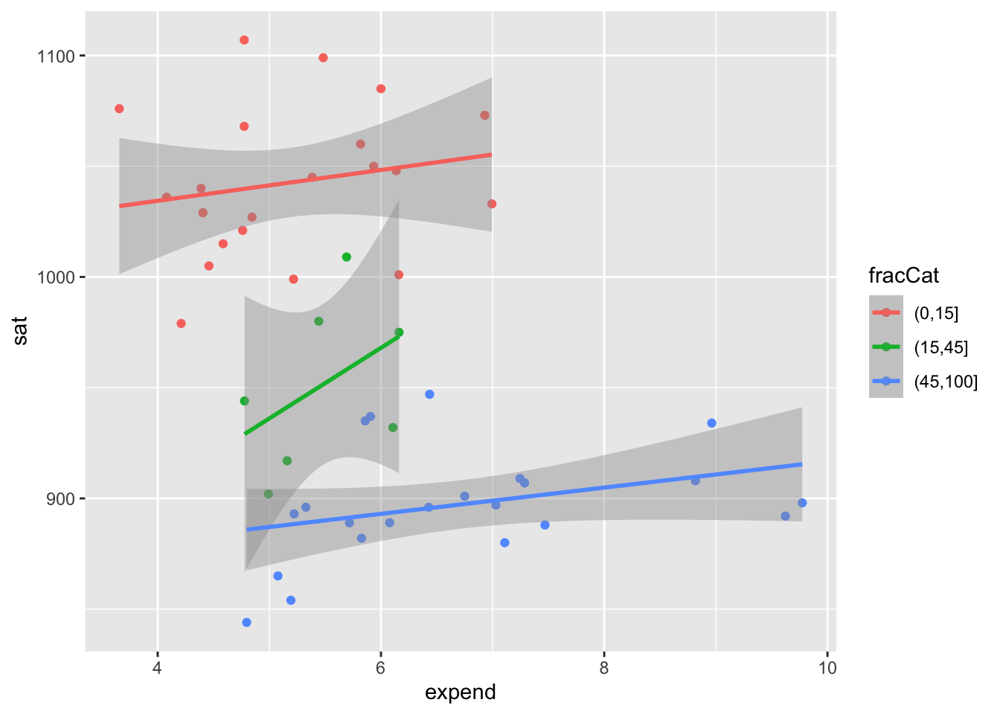
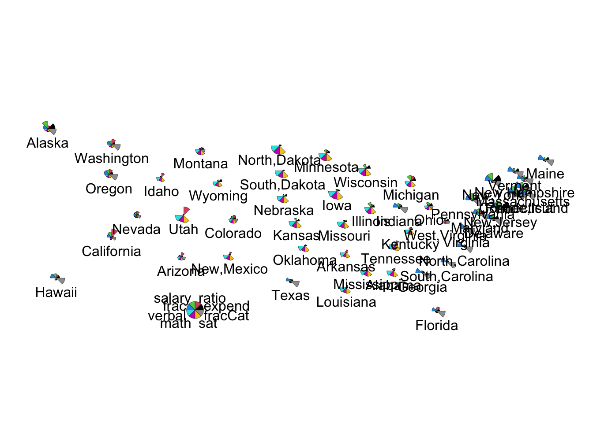

# Part A: Create histogramggplot(education, aes(x = sat)) +geom_density()
Part B: The average scores are between 800 to 1100. They are bi-modal
# SAT Scores vs Per Pupil Spendingggplot(education, aes(y = sat, x = expend)) +geom_point() +geom_smooth(method ="lm")

# Plot of SAT Scores vs. Salaryggplot(education, aes(y = sat, x = salary)) +geom_point() +geom_smooth(method ="lm")

Part B: The plot shows that typically, the higher per student spending and teacher salaries, the worse the SAT scores.
# Create plot for SAT Scores vs. Per Student Spending Vs. Teacher Salaries ggplot(education, aes(y = sat, x = salary, color = expend)) +geom_point() +geom_smooth(method ="lm")

# Exercise 4ggplot(education, aes(y = sat, x = salary, color =cut(expend, 2))) +geom_point() +geom_smooth(se =FALSE, method ="lm")
ggplot(education, aes(y = sat, x = salary, color =cut(expend, 3))) +geom_point() +geom_smooth(se =FALSE, method ="lm")
#Exercise 5, Part Aggplot(education, aes(x = fracCat)) +geom_bar()

#Part Bggplot(education, aes(x = sat, fill = fracCat)) +geom_density(alpha =0.5)

#Part cggplot(education, aes(y = sat, x = expend, color = fracCat)) +geom_point() +geom_smooth(method ="lm")

#Exercise 6: Let's Make Some Heat Mapslibrary(tibble)#Part A# Remove the "State" column and use it to label the rows# Then scale the variablesplot_data <- education |>column_to_rownames("State") |>data.matrix() |>scale()
#Part Bstars(plot_data,flip.labels =FALSE,locations =data.matrix(as.data.frame(state.center)), # added external data to arrange by geo locationkey.loc =c(-110, 28),cex =1, draw.segments =TRUE)

Source Code
---title: "ICA Mulivariate Viz"execute: echo: true warning: false error: false code-fold: true ---Use this file for practice with the **mulivariate viz** in-class activity. Refer to the class website for details.```{r}#Download GGPLOTlibrary(ggplot2) # Import Education Dataeducation <-read.csv("https://mac-stat.github.io/data/sat.csv")head(education)``````{r}# Part A: Create histogramggplot(education, aes(x = sat)) +geom_density()```Part B: The average scores are between 800 to 1100. They are bi-modal ```{r}# SAT Scores vs Per Pupil Spendingggplot(education, aes(y = sat, x = expend)) +geom_point() +geom_smooth(method ="lm")``````{r}# Plot of SAT Scores vs. Salaryggplot(education, aes(y = sat, x = salary)) +geom_point() +geom_smooth(method ="lm")```Part B: The plot shows that typically, the higher per student spending and teacher salaries, the worse the SAT scores.```{r}# Create plot for SAT Scores vs. Per Student Spending Vs. Teacher Salaries ggplot(education, aes(y = sat, x = salary, color = expend)) +geom_point() +geom_smooth(method ="lm")``````{r}# Exercise 4ggplot(education, aes(y = sat, x = salary, color =cut(expend, 2))) +geom_point() +geom_smooth(se =FALSE, method ="lm")``````{r}ggplot(education, aes(y = sat, x = salary, color =cut(expend, 3))) +geom_point() +geom_smooth(se =FALSE, method ="lm")``````{r}#Exercise 5, Part Aggplot(education, aes(x = fracCat)) +geom_bar()``````{r}#Part Bggplot(education, aes(x = sat, fill = fracCat)) +geom_density(alpha =0.5)``````{r}#Part cggplot(education, aes(y = sat, x = expend, color = fracCat)) +geom_point() +geom_smooth(method ="lm")``````{r}#Exercise 6: Let's Make Some Heat Mapslibrary(tibble)#Part A# Remove the "State" column and use it to label the rows# Then scale the variablesplot_data <- education |>column_to_rownames("State") |>data.matrix() |>scale()``````{r}#Exercise 7: Create Star Plots#Part Astars(plot_data,flip.labels =FALSE,key.loc =c(10, 1.5),cex =1, draw.segments =TRUE)``````{r}#Part Bstars(plot_data,flip.labels =FALSE,locations =data.matrix(as.data.frame(state.center)), # added external data to arrange by geo locationkey.loc =c(-110, 28),cex =1, draw.segments =TRUE)```